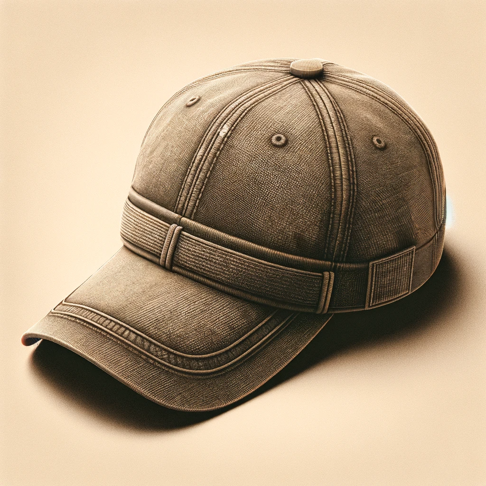

Casquette UrbanPulse
La casquette UrbanPulse est une casquette de type snapback. Elle est composée de 6 panneaux et
est
ajustable grâce à sa sangle à l'arrière.
La casquette LowRider est disponible en 3 coloris :
• Dune Dorée - pour une teinte de sable clair et chaleureuse.
• Terre d'Urbex - pour une couleur terre sombre rappelant les explorations urbaines.
• Crépuscule Métropolitain - pour un brun plus profond évoquant la fin de journée dans une ville animée.
• 100% coton
• 6 panneaux
• Visière courbée
• Sangle ajustable à l'arrière et à l'avant
• Taille unique
25.99€
Commentaires
John Doe
Super produit !Jane Doe
Je recommande !